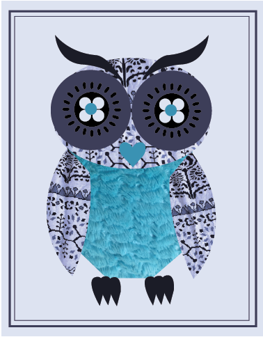

Photos
Facts about the Barn Owl
- They screech, and never hoot.
- They eat small mammals.
- They have long legs and talons to catch hidden prey.
- They hunt at night and find prey with their sensitive hearing and large eyes.
- They have large wings to support their lightweight bodies.